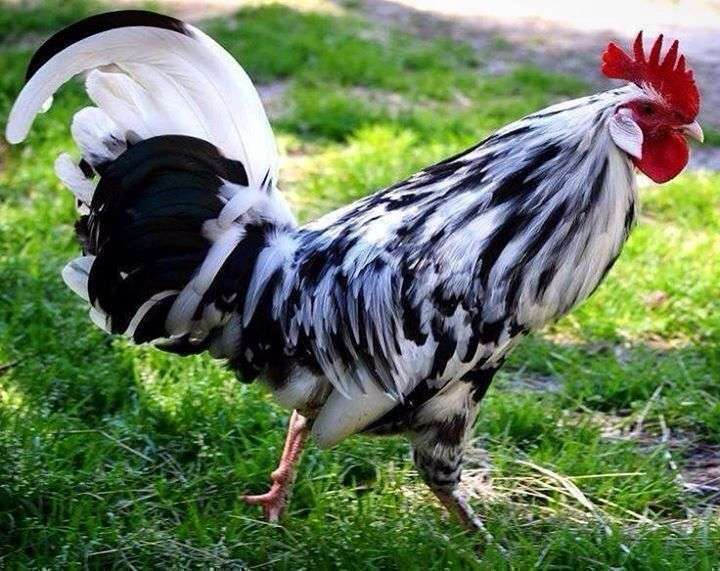

Leão / Lion

Conhecido como o rei da selva.
Elefante / Elephant

O maior animal terrestre, com tromba incrível!
Tigre / Tiger
Feroz e listrado, um grande caçador.
Girafa / Giraffe
Tem o pescoço mais longo do mundo!
Zebra / Zebra

Sua pele tem lindas listras pretas e brancas.
Cachorro / Dog
O melhor amigo do homem.
Gato / Cat
Adora brincar e tirar longos cochilos.
Coelho / Rabbit

Pulador rápido com orelhas grandes.
Galinha / Hen

Coloca ovos fresquinhos todos os dias.
Galo / Rooster
Geralmente ele quem anuncia o nascer do sol.
Cavalo / Horse

Forte e veloz, um grande companheiro.
Macaco / Monkey

Adora brincar e comer bananas!
Urso / Bear
Grande e fofo, mas muito forte!
Pato / Duck

Nada nos lagos e adora explorar.
Peixe / Fish
Vive na água e nada sem parar.
Jacaré / Alligator
Um nadador forte com dentes afiados.
Cobra / Snake
Se move rastejando pelo chão.
Papagaio / Parrot
Adora repetir o que você diz!
Coruja / Owl
Observa tudo à noite com seus olhos grandes.
Porco / Pig
Adora lama e explorar o ambiente.
Vaca / Cow
Dá o leite que a gente bebe.
Ovelha / Sheep
Sua lã é macia e quentinha.
Lobo / Wolf
Vive em matilhas e é muito inteligente.
Pinguim / Penguin
Anda engraçado e vive no gelo.
Canguru / Kangaroo

Tem uma bolsa para carregar seus filhotes.
Camaleão / Chameleon
Consegue mudar de cor e camuflar no ambiente.
Pavão / Peacock
Conhecido por sua impressionante cauda colorida.